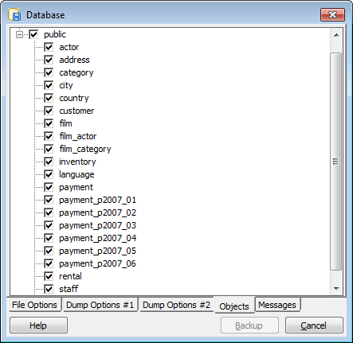
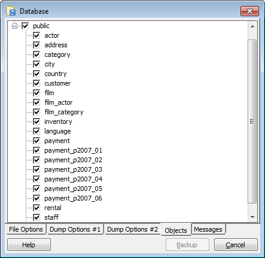
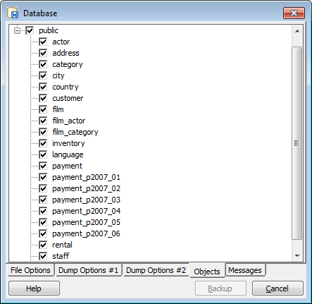
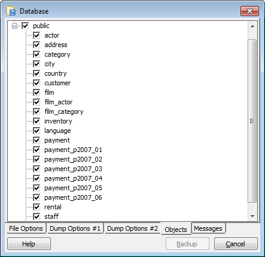

 
 La fenêtre de sauvegarde présente une interface un peu simplifiée de l'outil pg_dump de PostgreSQL. Vous pouvez sauvegarder une seule table, un seul schéma ou une base de données complète suivant l'objet que vous avez sélectionné au lancement de l'outil de sauvegarde.
pg_dump ne supporte pas toutes les outils pour les formats de fichiers de sauvegarde. En particulier, pour sauvegarder les objets binaires, le format PLAIN ne peut pas être utilisé. De plus, un fichier PLAIN n'est pas restaurable par pgAdmin. Le format PLAIN créera un script SQL qui peut être exécuté en utilisant l'outil psql. Pour sauvegarder et restaurer à partir de pgAdminIII, les formats COMPRESS et TAR sont recommendés.
Pour utiliser la sauvegarde, l'outil pg_dump doit être accessible par pgAdmin. Ceci est possible si ce dernier fait partie du PATH système et s'il se trouve dans le même répertoire que l'exécutable pgadmin3.